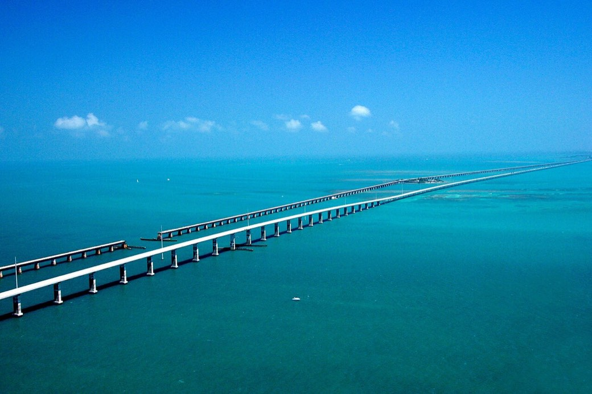
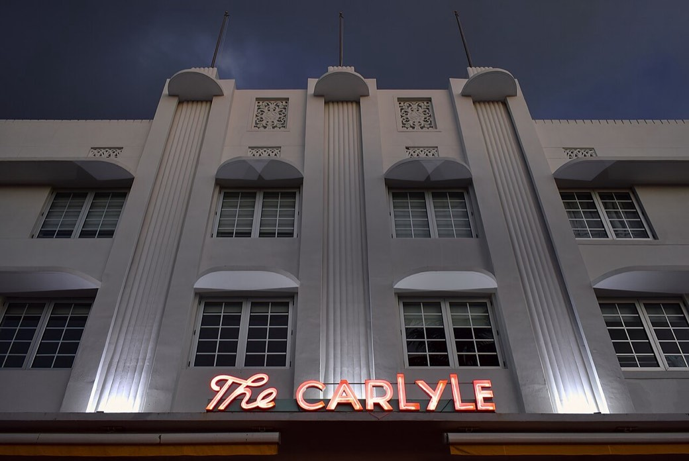
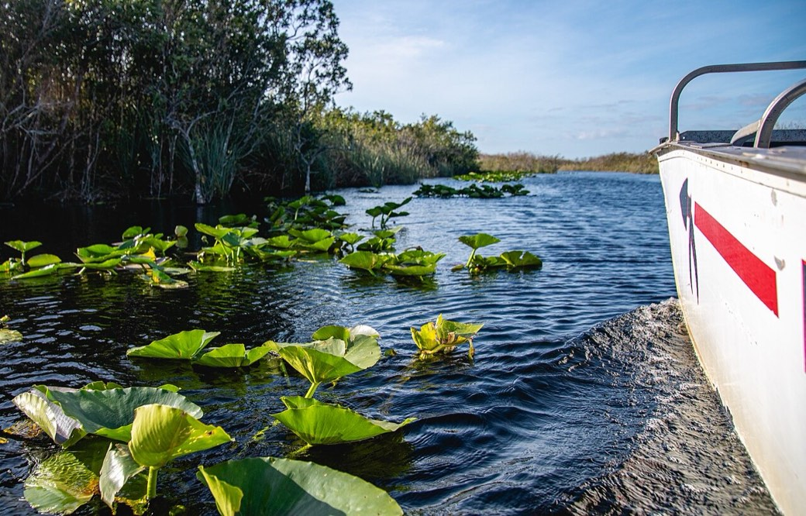
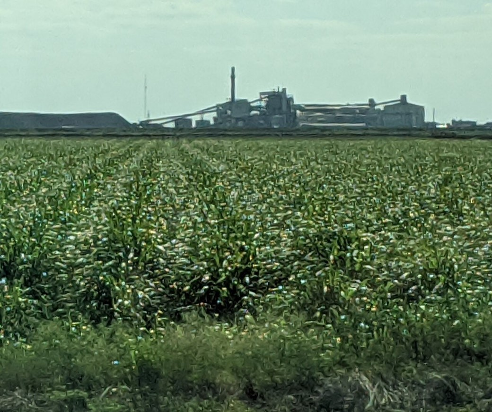
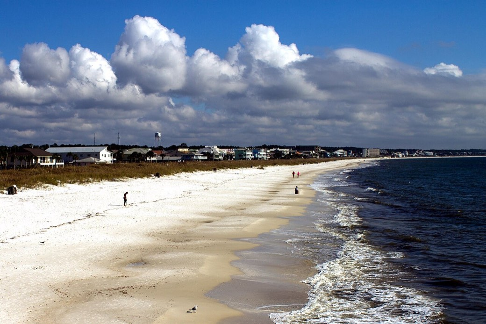
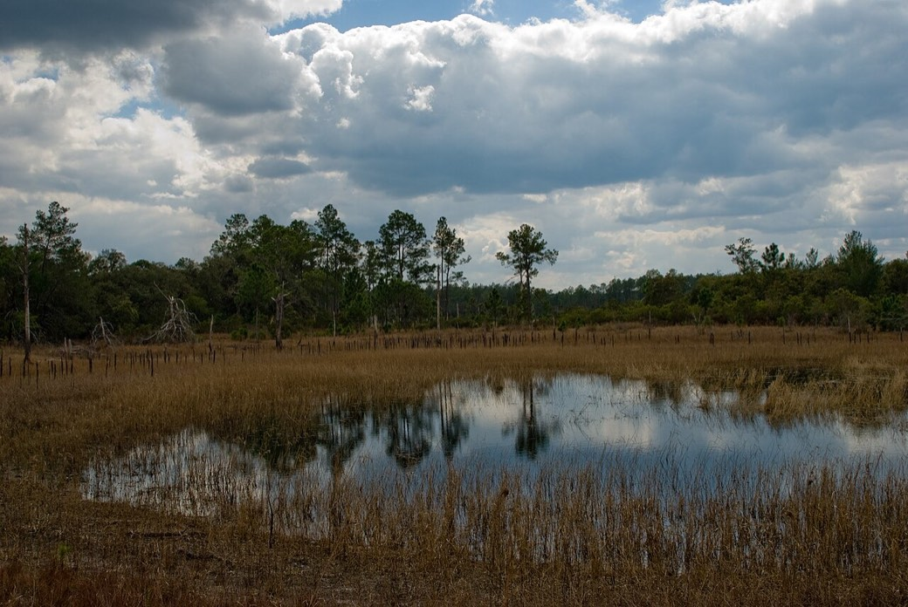

ولاية ليونايدا
The state of Leonida
ولاية خيالية تقابل فلوريدا، وهي مسرح اللعبة كله. هذه مناطقها الست المعلنة، في جولة تبدأ من الجزر جنوبًا وتنتهي عند الجبل شمالًا.
A fictional state standing in for Florida, and the game's entire stage. These are its six announced regions, on a tour from the islands in the south to the mountain in the north.
-

جزر ليونايدا
Leonida Keys
Leonida Keys
أرخبيل استوائي في أقصى الجنوب: حانات على الشاطئ وقوارب صيد وتاريخ طويل مع التهريب. هنا يسكن جيسون، ومن هنا يدير براين تجارته.
A tropical island chain in the far south: beach bars, fishing boats and a long history of smuggling. Jason lives here, and Brian runs his trade from here.
في الصورة: جسر الأميال السبعة في جزر فلوريدا كيز، وهي ما استُوحيت منه المنطقة.
Pictured: Seven Mile Bridge in the Florida Keys, the region's real-world model.
-

فايس سيتي
Vice City
Vice City
قلب الولاية وأشهر مدنها: شواطئ وفنادق بطراز آرت ديكو وأضواء نيون وميناء مزدحم. فيها يدير بوبي آيك أعماله وتُسجَّل أغاني «أونلي رو».
The heart of the state and its best-known city: beaches, art deco hotels, neon and a busy port. Boobie Ike runs his businesses here, and Only Raw records here.
في الصورة: فندق بطراز آرت ديكو في ميامي بيتش، المدينة التي استُوحيت منها فايس سيتي.
Pictured: An art deco hotel in Miami Beach, the city Vice City is modelled on.
-

غراسريفرز
Grassrivers
Grassrivers
مستنقعات شاسعة تمخرها القوارب الهوائية وتسكنها التماسيح، وأرض بكر تبدو بعيدة كل البعد عن صخب المدينة.
Vast wetlands crossed by airboats and home to alligators; wild country that feels a world away from the city.
في الصورة: قارب هوائي في منتزه إيفرغليدز الوطني، وهو ما استُوحيت منه المنطقة.
Pictured: An airboat in Everglades National Park, the region's real-world model.
-

أمبروزيا
Ambrosia
Ambrosia
بلدة صناعية في قلب الولاية يهيمن عليها مصنع لتكرير السكر، ولعصابة من راكبي الدراجات النارية فيها كلمة مسموعة.
An industrial town in the middle of the state, dominated by a sugar refinery, where a biker gang has a say in how things run.
في الصورة: مصنع سكر خلف حقول القصب في بيل غليد بوسط فلوريدا.
Pictured: A sugar mill behind cane fields in Belle Glade, central Florida.
-

بورت غيلهورن
Port Gellhorn
Port Gellhorn
ساحل منسي كان يومًا مقصدًا للسياح. بقيت منه نُزُل رخيصة ومعالم مهجورة واقتصاد يعيش على الهامش.
A forgotten coast that was once a holiday spot. What is left is cheap motels, abandoned attractions and an economy on the margins.
في الصورة: شاطئ مكسيكو بيتش على «الساحل المنسي» في شمال غرب فلوريدا.
Pictured: Mexico Beach on Florida's Forgotten Coast.
-

جبل كالاغا
Mount Kalaga National Park
Mount Kalaga National Park
منتزه وطني على الحدود الشمالية للولاية: غابات وبحيرات وصيد ومسارات وعرة، وسكان يفضّلون العزلة على كل شيء.
A national park on the state's northern border: forest, lakes, hunting and rough trails, and locals who prefer to be left alone.
في الصورة: مرج فارلز في غابة أوكالا الوطنية بفلوريدا.
Pictured: Farles Prairie in Ocala National Forest, Florida.
ترتيب المحطات تقريبي، فخريطة اللعبة الكاملة لم تُنشر بعد.
The order of stops is approximate, since the full game map has not been published.
ولاية حيّة
A living state
تفاصيل معلنة تجعل ليونايدا أكثر من خريطة، وكثير منها يحمل نصًّا أو صوتًا يحتاج إلى تعريب.
Announced details that make Leonida more than a map, many of which carry text or audio to localize.
- الطقس
- Weather
- طقس متقلّب يختلف من منطقة إلى أخرى، فيه أعاصير وعواصف استوائية.
- Changing weather that differs by region, with hurricanes and tropical storms.
- الناس
- People
- سكان يتفاعلون مع ما يجري حولهم، وينتبهون إن استرقتَ السمع إليهم.
- Residents who react to what happens around them, and notice when you eavesdrop.
- الأنشطة
- Activities
- قفز مظلي ومصارعة وكرة سلة وتجديف وغوص.
- Skydiving, wrestling, basketball, kayaking and scuba diving.
- البيوت الآمنة
- Safehouses
- منتشرة في أنحاء الولاية، يعود إليها البطلان بين المهمات.
- Spread across the state, where the leads return between missions.
- الإذاعة
- Radio
- محطات منها V-Rock، Flash FM، Emotion 98.3، Vice City FM، Back Country Radio، Cocoteo FM.
- Stations including V-Rock, Flash FM, Emotion 98.3, Vice City FM, Back Country Radio, Cocoteo FM.
كتابة الأماكن بالعربية
Writing the places in Arabic
كتابة مقترحة تبقى كذلك إلى أن تُعتمد في مسرد المشروع.
A proposed spelling, until adopted in the project glossary.
| بالعربية | Arabic | بالإنجليزية | English | ملاحظة | Note |
|---|---|---|---|---|---|
| ليونايدا | Leonida | اسم الولاية، يقابل فلوريداThe state; stands in for Florida | |||
| فايس سيتي | Vice City | اسم علم معروف للاعبين، لا يُترجم إلى «مدينة الرذيلة»A proper name players know; not translated literally | |||
| جزر ليونايدا | Leonida Keys | تُترجم «Keys» إلى «جزر»"Keys" is translated as "islands" | |||
| غراسريفرز | Grassrivers | يُنقل صوتيًاTransliterated | |||
| أمبروزيا | Ambrosia | ||||
| بورت غيلهورن | Port Gellhorn | ||||
| منتزه جبل كالاغا الوطني | Mount Kalaga National Park | تُترجم الكلمات العامة ويبقى «كالاغا»Generic words are translated; "Kalaga" stays | |||
| سجن ليونايدا | Leonida Penitentiary | ||||
| ليبرتي سيتي | Liberty City |
مصادر الصور
Photo credits
الصور لأماكن حقيقية في فلوريدا من ويكيميديا كومنز، وكلها في الملك العام أو برخصة CC0. ليست لقطات من اللعبة.
The photos show real places in Florida, from Wikimedia Commons, all public domain or CC0. They are not screenshots of the game.
| المنطقة | Region | المصوّر | Photographer | الترخيص | Licence |
|---|---|---|---|---|---|
| جزر ليونايداLeonida Keys | U.S. Department of Transportation | Public domain | |||
| فايس سيتيVice City | Radomianin | Public domain | |||
| غراسريفرزGrassrivers | Everglades National Park (NPS) | Public domain | |||
| أمبروزياAmbrosia | Jamesmartin111 | CC0 | |||
| بورت غيلهورنPort Gellhorn | Balon Greyjoy | CC0 | |||
| جبل كالاغاMount Kalaga National Park | Sandra Friend | Public domain |
.jpg){kind=link}
,_Miami_Beach,_east_view_up,_2018-08-21.jpg){kind=link}
.jpg){kind=link}


المعلومات هنا مما نُشر قبل صدور اللعبة، من الموقع الرسمي للعبة وويكيبيديا، وكُتبت بصياغتنا. صور الأماكن لمواقع حقيقية في فلوريدا وليست من اللعبة، ورسوم الشخصيات برمجية.
Everything here was published before launch, on the official game site and Wikipedia, and is written in our own words. Place photos show real Florida locations, not the game, and the character art is drawn in code.